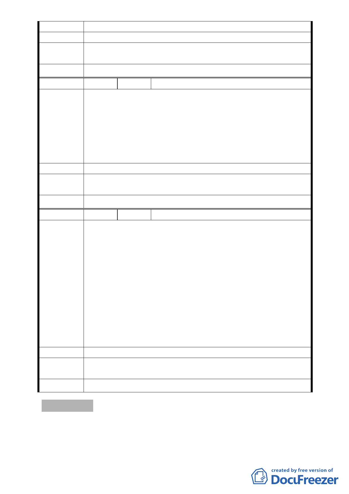

政府應採輔導及關懷措施，輔導其成長。
建 議 辦 法 贊成本變更案。
專案小組
審查結論
錄案供參。
委員會決議 本案主要計畫依市府所提修正後內容通過。
編 號 9 陳情人 蔡莉婷
我是住在慈惠堂附近已經數十年的居民，據我所知慈惠堂在建
廟的這三十多年間，對中行里這一帶的社區居民貢獻良多。堂
方除了不定期舉辦許多公益性活動之外，也默默的為社區作許
陳 情 理 由 多事情，像是社區內瑠公國中及福德國小的水電費，多年來也
是由慈惠堂來支付。所以當知道郭堂主想要把慈惠堂用地變更
時，本人是贊成，因為我相信慈惠堂在用地變更完成之後會回
饋更多更實在的資源給社區。
建 議 辦 法 贊成本變更案。
專案小組
審 查 結 論 錄案供參。
委員會決議 本案主要計畫依市府所提修正後內容通過。
編 號 10 陳情人 黃淑美
感恩松山慈惠堂，在我無所皈依的孤獨心靈中，找到心靈的心
燈。
在我經歷痛失雙親的痛苦、家庭的不合、經歷摯友在背後捅刀
的尷尬，可謂酸甜苦辣，五味俱全，我的心如止水。由於創痛，
我常夢中驚醒，我傷心落淚，人間無常，讓我失去對生活的熱
陳情理由
愛，更不想活在這世上。後來在一個因緣下，我來到松山慈惠
堂，拜母娘，母娘慈悲，賜福者，郭堂主也非常的好，有愛心
的照顧我們。母娘、堂主將我的心靈振開，我逐漸學會遺忘，
把內心的垃圾洗盡。用寧靜心、感悟心去面對我的人生，學會
寬量，容忍，多一份寬心，愛心。我常想，佛前的燈不必刻意
去點，內心的燈一定要點燃。也希望松山慈惠堂，成為宗教聖
地，讓每個人心靈，都能在松山慈惠堂找到心靈的依靠。
建 議 辦 法 贊成本變更案。
專案小組
審查結論
錄案供參。
委員會決議 本案主要計畫依市府所提修正後內容通過。
討論事項 二
案名：劃定臺北市內湖區文德段二小段231-3地號等4筆土地為更
新單元案
案情概要說明：
- 13 -